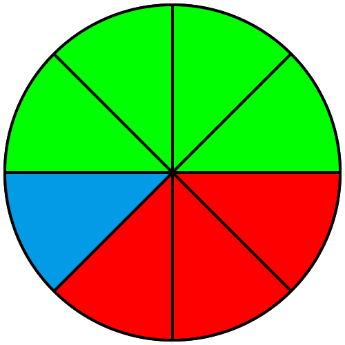
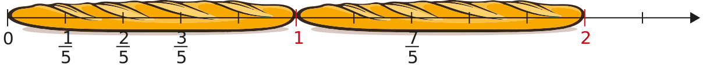
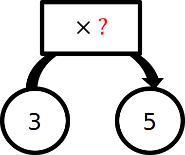

|
Chapitre 12
|
- Fraction - Proportion et quotient
|
Activité Introduction
-
Reproduire et compléter le tableau ci-dessous en coloriant chaque case de la couleur correspondant à celle de la figure.
| $\frac{1}{8}$ |
$\frac{1}{2}$ |
$\frac{4}{8}$ |
$\frac{2}{4}$ |
$\frac{3}{8}$ |
|
|
|
|
|

-
Reproduire le rectangle ci-contre et le compléter avec les bonnes couleurs en utilisant le tableau ci-dessous.
| $\frac{2}{18}$ |
$\frac{1}{3}$ |
$\frac{2}{9}$ |
$\frac{1}{6}$ |
$\frac{3}{18}$ |
|
|
|
|
|
-
Sur la demi-droite graduée ci-dessous, on a placé les fractions $\frac{1}{6}$ et $\frac{1}{3}$
Reproduire la demi-droite et y placer les fractions $\frac{2}{3}$ et $\frac{5}{6}$.
Fraction :
Vocabulaire :
Le quotient de deux nombre (▲ et ●) peut être représenté sous forme fractionnaire $(\frac{\textcolor{#039be5}{▲}}{\textcolor{#43a047}{●}})$. Lorsque les nombres sont entiers on parle alors de fraction.
| 4 |
← |
Numérateur |
| 5 |
← |
Dénominateur |
Ecritures fractionnaires :
$\frac{1,5}{6}$
$\frac{16,4}{17,9}$
$\frac{4,6}{1}$
Fractions :
$\frac{1}{2}$
$\frac{16}{11}$
$\frac{8}{1}$
Demi-droite graduée :
Les fractions sont utilisées pour se repérer sur une demi-droite graduée.
Exemple :
L'unité (ici la baguette de pain) est partagée en 5 parts égales.

La position du point M est $\frac{3}{5}$. Celle du point N est $\frac{7}{5}$.
Remarques :
- La position d'un point sur un axe graduée est appelé abscisse.
- Lorsque le numérateur est plus grand que le dénominateur, la fraction est plus grande que 1.
Quotient :
Définition :
Le quotient de deux nombre ▲ et ● est le nombre qui multiplié par ● donne ▲. On le note $(\frac{\textcolor{#039be5}{▲}}{\textcolor{#43a047}{●}})$
$\textcolor{#43a047}{●}\times\frac{\textcolor{#039be5}{▲}}{\textcolor{#43a047}{●}}=\textcolor{#039be5}{▲}$
Exemple :

Par quoi doit-on multiplier 3 pour obtenir 5 ?
Soit $3\times\textcolor{#e53935}{?} = 5$. Le nombre est ainsi $\frac{5}{3}$ : $3\times \textcolor{#e53935}{\frac{5}{3}} = 5$.
Fraction d'une quantité :
Prendre une fraction d'une quantité, c'est multiplier cette quantité par la fraction.
Exemple :
Léa a 20€. Elle en dépense les $\frac{3}{4}$ pour acheter un DVD. Combien a-t-elle dépensé ?
On effectue la multiplication : $20 \times \frac{3}{4} = 20 \times 0,75 = 15$, Elle aura donc dépensé 15€.
Fractions égales :
Définition :
Un quotient ne change pas lorsque l'on multiplie (ou divise) son numérateur et son dénominateur par un même nombre (non nul).
Soit k$\neq0$ :
$\frac{a}{b}=\frac{a\ \times\ \textcolor{#e53935}{k}}{b\ \times\ \textcolor{#e53935}{k}}$
et
$\frac{a}{b}=\frac{a\ \div\ \textcolor{#e53935}{k}}{b\ \div\ \textcolor{#e53935}{k}}$
Exemples :
$\frac{6}{7}=\frac{6\ \times\ \textcolor{#e53935}{4}}{7\ \times\ \textcolor{#e53935}{4}}=\frac{24}{28}$
$\frac{32}{24}=\frac{32\ \div\ \textcolor{#e53935}{8}}{24\ \div\ \textcolor{#e53935}{8}}=\frac{4}{3}$
Produit en croix :
Propriété : (Egalité des produits en croix)
Soient $\textcolor{#e53935}{a}$, $\textcolor{#039be5}{b}$, $\textcolor{#43a047}{c}$ et $\textcolor{#EEBB00}{d}$ des nombres relatifs ($\textcolor{#039be5}{b}\ne0, \textcolor{#EEBB00}{d}\ne0$).
Si $\frac{\textcolor{#e53935}{a}}{\textcolor{#039be5}{b}} = \frac{\textcolor{#43a047}{c}}{\textcolor{#EEBB00}{d}}$, alors $\textcolor{#e53935}{a}\times \textcolor{#EEBB00}{d}=\textcolor{#039be5}{b}\times \textcolor{#43a047}{c}$
et
Si $\textcolor{#e53935}{a}\times \textcolor{#EEBB00}{d}=\textcolor{#039be5}{b}\times \textcolor{#43a047}{c}$, alors $\frac{\textcolor{#e53935}{a}}{\textcolor{#039be5}{b}} = \frac{\textcolor{#43a047}{c}}{\textcolor{#EEBB00}{d}}$
Exemples :
$\frac{1}{3}=\frac{2}{6}$ car $1\times6=6$ et $2\times3=6$
$\frac{15}{20}=\frac{21}{28}$ car $15\times28=420$ et $20\times21=420$
Simplification :
Simplifier une fraction, c'est trouver une fraction qui lui est égale, ayant un dénominateur plus petit.
Exemples :
$\frac{15}{40}=\frac{\cancel{5}\times\ 3}{\cancel{5}\times\ 8}=\frac{3}{8}$
$\frac{18}{42}=\frac{\cancel{6}\times\ 3}{\cancel{6}\times\ 7}=\frac{3}{7}$